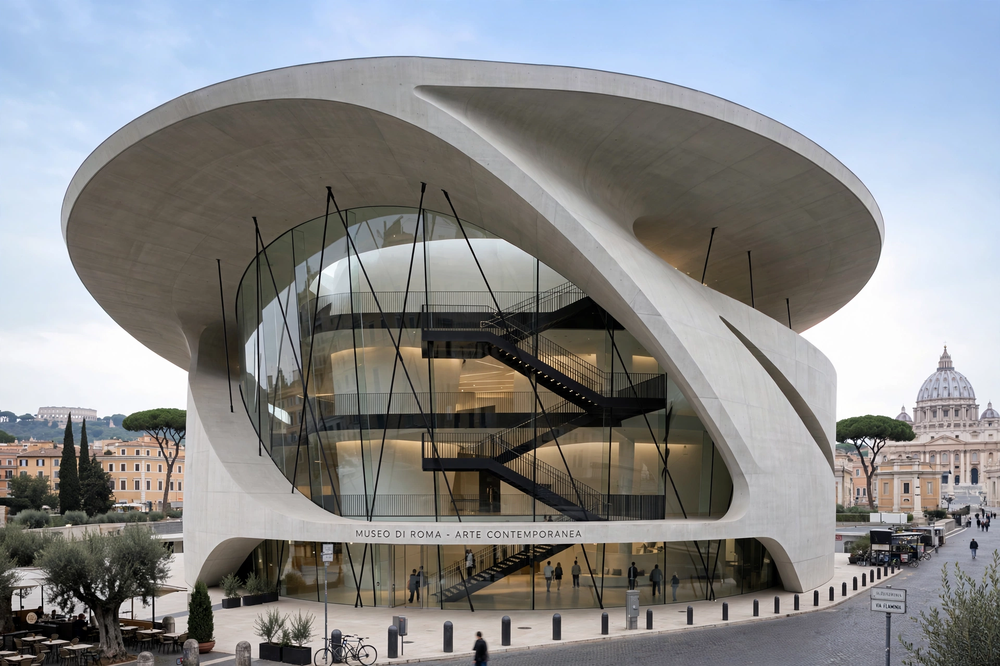

From Wikipedia, the free encyclopedia
| MAXXI — National Museum of 21st Century Arts | |
 | |
| Location | Flaminio quarter, Rome, Italy |
|---|---|
| Architect | Zaha Hadid |
| Opened | 30 May 2010 |
| Scope | Contemporary art (MAXXI Art) and architecture (MAXXI Architettura) |
MAXXI (Italian: Museo nazionale delle arti del XXI secolo, "National Museum of 21st-Century Arts") is a national museum of contemporary art and architecture in the Flaminio neighbourhood of Rome, Italy. Designed by Iraqi-British architect Zaha Hadid, it is the first Italian national museum devoted to contemporary creativity.
The Italian Ministry for Cultural Heritage founded the museum on the site of former army barracks, the Caserma Montello. Hadid won the international design competition in 1998; construction began in 2003 and the building — a complex of swooping, intersecting concrete volumes threaded by black suspended staircases — opened to the public on 30 May 2010. It won the Stirling Prize of the Royal Institute of British Architects the same year.
MAXXI houses two museums: MAXXI Art, whose permanent collection includes works by artists such as Alighiero Boetti, Francesco Clemente, William Kentridge and Gerhard Richter, and MAXXI Architettura, holding archives and models of Italian architects including Carlo Scarpa, Aldo Rossi and Pier Luigi Nervi, alongside photography collections. Alongside exhibitions it stages performances, conferences, and educational programmes, and manages the annual YAP MAXXI young architects programme.
Hadid conceived the building not as a container of discrete galleries but as a continuous, fluid field of spaces — "a campus for art" — in which curving walls branch and intersect, echoing the urban grids around the site and allowing exhibitions to flow into one another without fixed routes.